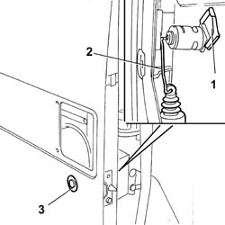

7020D22 LOCK BLOCK - R+R WITH HANDLE REMOVED
- Path
- Procedures > 70 FITTINGS > 7020 LOAD COMPARTMENT DOORS > 7020D SLIDING DOOR CLOSURE DEVICES > 7020D22 LOCK BLOCK - R+R WITH HANDLE REMOVED
- Kind
- repair procedure (removal / refitting; the operation number is the code)
- Applies to
- all engines; all production periods
- Interactive page
- https://sloeber94.github.io/elrnDB-fDct/en/#/244001469
Applies to: all engines; all production periods
 Removing
Removing
 Refitting
Refitting1. Remove the springs fastening the lock barrel.
2. Disconnect the lock rod from the lock barrel.
3. Remove the lock barrel.

Applies to: all engines; all production periods
Refitting
Removing- Fit the lock barrel in the special housing in the sliding door.
- Secure the lock barrel to the sliding door fitting the retaining spring.
- Connect the lock rod to the lock barrel.